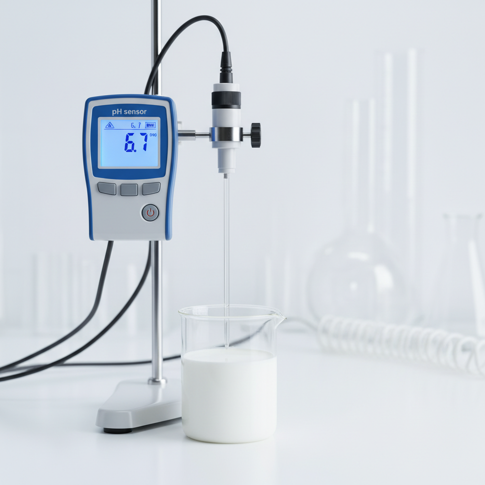
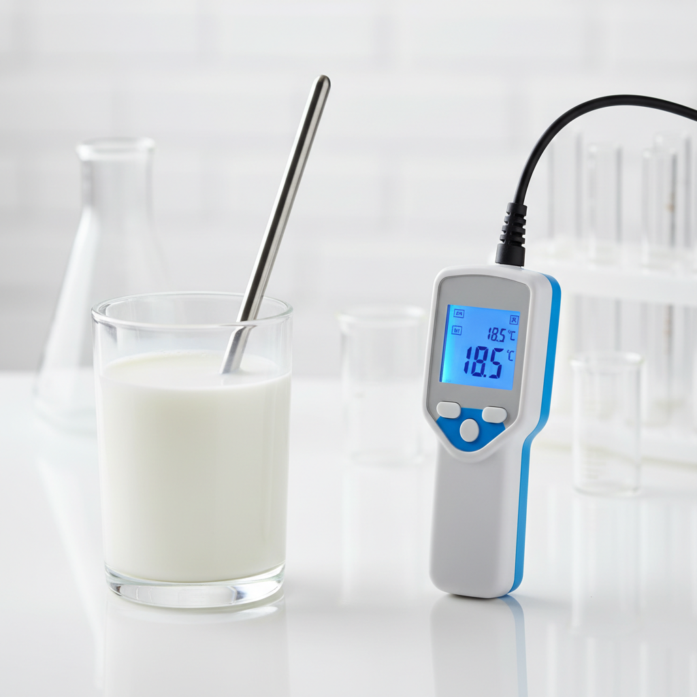
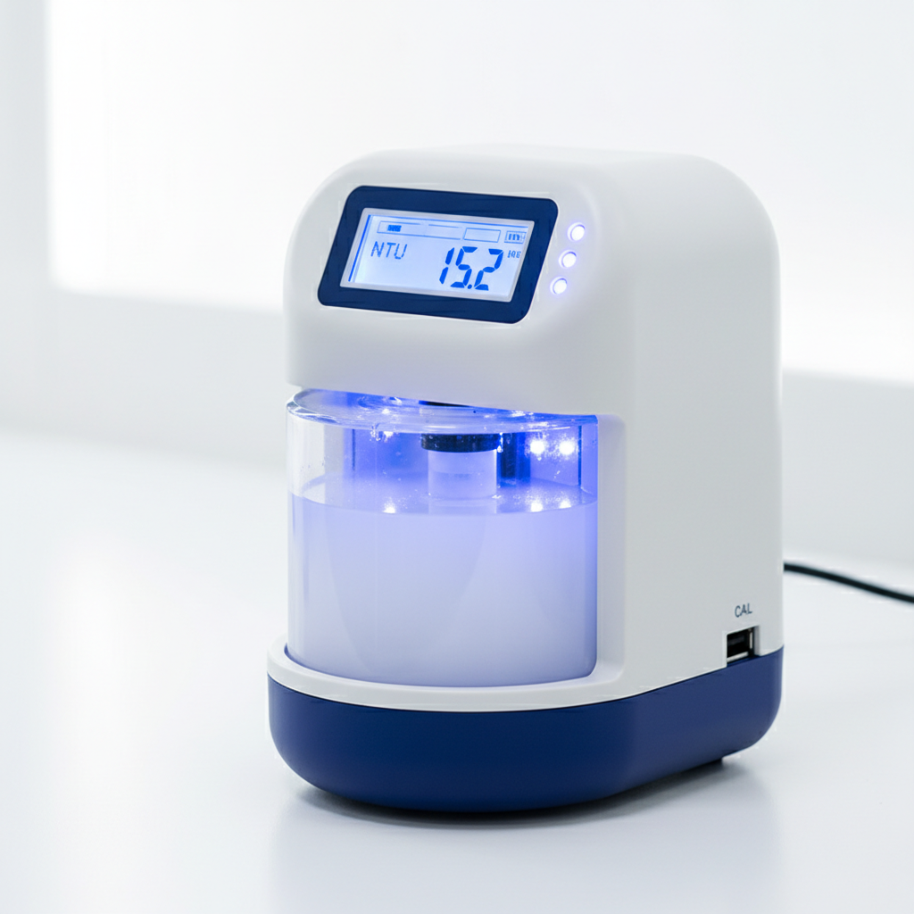
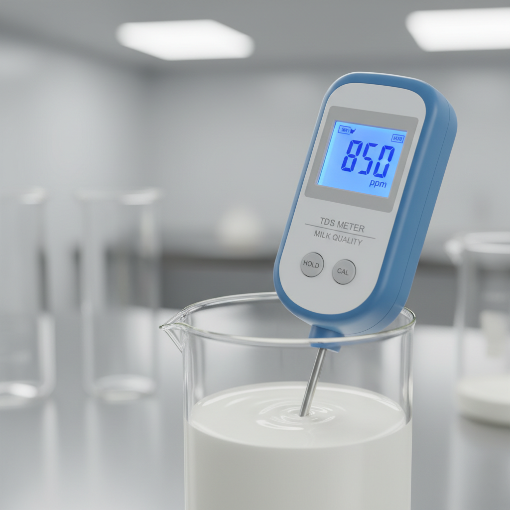

Sensor Technology
Advanced multi-parameter sensor array providing comprehensive milk quality analysis with scientific precision.

pH Sensor
Measures acidity/alkalinity levels
Range: 6.0 - 7.0
Optimal: 6.4 - 6.8

Temperature Sensor
Monitors thermal conditions
Range: 0°C - 50°C
Optimal: 15°C - 20°C

Turbidity Sensor
Detects cloudiness/particles
Range: 0 - 100 NTU
Optimal: 10 - 20 NTU

TDS Sensor
Measures dissolved solids
Range: 0 - 2000 ppm
Optimal: 800 - 1200 ppm

Gas Sensor
Detects volatile compounds
Type: MQ135
Detects: NH₃, NOx, alcohol